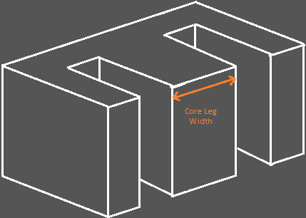
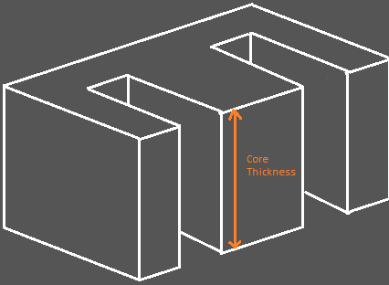

Welcome to my Transformer Designer Page
Applicable to EI, EE, CI, UI Transformers
Select Unit of Measurement
Unit of measurement
mm
cm
in
Iron Properties
Core's center leg width
The center leg width is the E's middle leg width.

Core's laminate stacking thickness
The laminate's stacking thickness is the stacking height.

Core's iron max flux density (Tesla)
The maximum flux density plays an important role in the transformer. It specifies the limit where the iron core starts to saturate. When the core saturates, it becomes ineffective because it can no longer generate additional magnetic flux. If manufactuer's data is available, replace the value here. If there is no available data, we just assume value to 0.6 Tesla.
Voltage And Frequency Specs
Primary voltage (Volts)
Secondary voltage (Volts)
Line frequency (Hertz)
Wave shape
For mains supply, the shape is standard sine wave. For SMPS applications, you may want to use square wave.
sine wave
square wave
Stacking Factors
Stacking factor (%)
For laminated core, stacking factor is the amount of gaps in between the laminate stackings expressed as percentage, default is 10%. For ferrite core or iron powder core, since it has no laminates, you may replace this to zero (0).
Calculate Winding Turns
Calculated turns - Primary
Calculated turns - Secondary
Next - Calculate Wire Size
Copyright © 2022 by J.A.Agutaya
All right reserved.